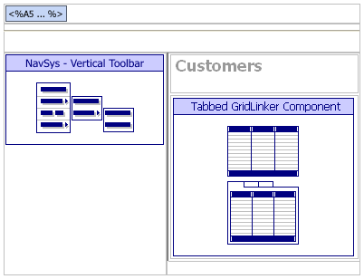
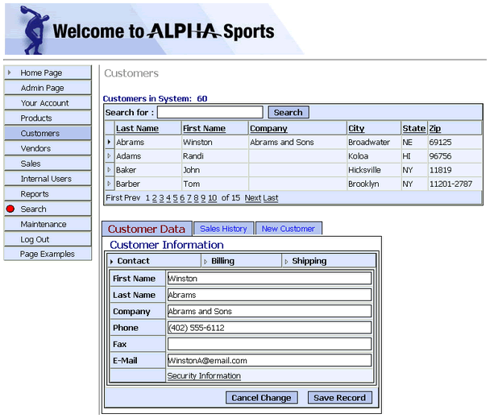

ASWCUSTOMERS.A5W
Purpose
Application administrators use the ASWCUSTOMERS.A5W page to maintain customer records.
Links
The Customers > Customer List entry in the NAV_INT navigation component displays the ASWCUSTOMERS.A5W page.
Description
In addition to the NAV_INT navigation component, the ASWCUSTOMERS.A5W page contains a tabbed gridlinker named TGRDL_CUST. The parent grid is a grid component named GRD_CUSTLIST that displays customer records. There are 3 linked child grids.
GRD_CUST - contains a single customer record. This component appears on other pages, such as AWSCUSTDET.A5W. The gridlinker contains an override to make the grid styles to the gridlinker's style.
GRD_INVHC - contains a list of invoices for the current user. There is a link to the actual invoice record. This component has an override in the gridlinker to hide a column. The column is only used when the component is opened from public pages.
GRD_CUSTN - has the same component design as GRD_CUST, but was redesigned to only accept new records.
The following picture shows the page structure and the outlines of the tables that contain the NAV_INT navigation component and the GRD_CUSTLIST tabbed grid component.

ASWCUSTOMERS.A5W in the WYSIWYG tab of the HTML Editor

ASWCUSTOMERS.A5W in the Browser
Edits to the Page Source
When you look at ASWCUSTOMERS.A5W with the Source tab of the HTML Editor, you will see a large amount of HTML and Xbasic code. The HTML Editor placed almost all of it there automatically, as we used the WYSIWYG tab to place the tables, text, graphics, and components on the page. There are a few interesting exceptions, where the designer changed the page code through the Source tab.
Navigation Component Overrides
The designer added two overrides of the navigation component's properties. First, the location = "Customers" highlights the navigation component's "Customer" tab.
|
... navigation component code inserted by the HTML Editor with tmpl_NAV_INT location = "Customers" ... end with |
The A5W_INCLUDE() statement is in the top row of the table. It loads TOPPAGE.A5W and displays a standard page header.
|
<body> <p> <table cellSpacing=0 cellPadding=0 width="800" border=0> <tr> <td colspan="2"> <%a5 a5w_include("toppage.a5w") %> |
Page Security Information
Login Required
Groups Allowed > Accounting, Administrators, Clerical, Marketing
See Also